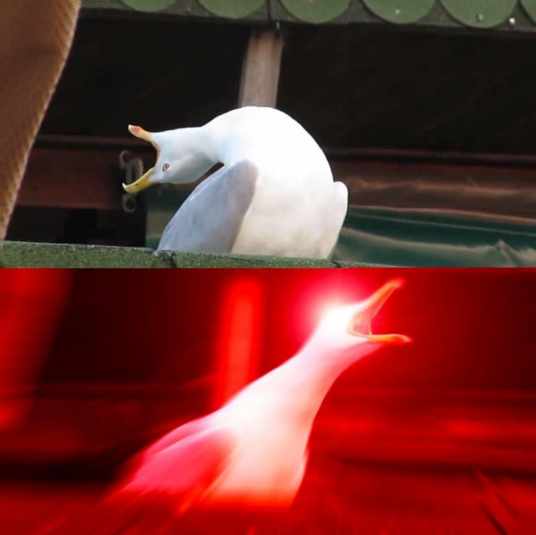

STEP 1. Relaxation Phase
Use your belly and chest. Imagine your body is a container, let the air fills the belly first, then the chest. Breath slowly and focus on relaxation.
A better way to hold your breath longer. Useless on land though.
Use your belly and chest. Imagine your body is a container, let the air fills the belly first, then the chest. Breath slowly and focus on relaxation.
Once you feel you're ready, follow the breathing method mentioned in step one and hold your breath. Don't forget to shut your mouth, too.
High heart rates makes the air consumption faster, so stay relaxed as you can. You will feel difficult to continue by the time, that's because the CO2 is building up in your body, but you won't die of this. Try not let it interrupt your relaxation.
After finishing breath holding, inhale once and hold your breath again. When you feel you need to exhale, just let the air go. Repeat it at least 3 times.